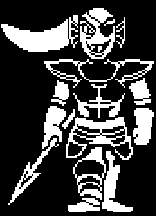

⏮ Ir al anterior Ir al siguiente⏭
INDICE:
Frisk es el personaje jugable, cuyo nombre solo se revela al final de la Ruta Pacifista Verdadera. Es uno de los ocho humanos que llegan al Mundo subterráneo a través del Monte Ebott. Undertale documenta el viaje de Frisk en el Underground (Subsuelo o Subterráneo) hasta el castillo de ASGORE, donde se encuentra la barrera para huir.

Toriel es uno de los jefes del juego, además de ser una de los personajes principales de Undertale es la Guardiana de Las Ruinas, la ex-esposa de Asgore Dreemurr, madre adoptiva de Frisk/Personaje (Y también Chara) y madre biológica de Asriel.
Flowey es el primer personaje que el jugador se encuentra en Undertale. Provee las bases de la jugabilidad de los combates (mediante engaños en los que incitará a chocar con sus semillas) intentando incrementar el LV (o LOVE) usando sus "Pétalos Amigables").

Napstablook es un fantasma de carácter melancólico y la música es su pasión. Vive en Waterfall y su primer encuentro con el jugador es en Las Ruinas, donde finge estar dormido. Es el primer mini-jefe del juego.

Papyrus (conocido como COOLSKELETON95 en la red social "UnderNet") es el hermano menor de Sans (Confirmado por Toby Fox), y uno de los personajes principales en Undertale. Él busca capturar a un humano para convertirse en miembro de la Guardia Real.(Emigk,2016)
Sans es el hermano mayor de Papyrus. Aparece al inicio en el Bosque de Snowdin a las afueras del pueblo de Snowdin. Es uno de los personajes principales en Undertale y, dependiendo de las elecciones del jugador, puede ser tanto un personaje de apoyo y amigable o un antagonista heroico (esto último se nota más en la ruta genocida).

Undyne es la Líder de la Guardia Real. Puesta con una armadura completa persigue al jugador a través de todo Waterfall, donde ella reside, con el objetivo de llevarlo con el rey y obtener su alma. Sus planes se ven frustrados frecuentemente por la aparición en escena de Monster Kid. En la ruta genocida es la única que puede usar el poder de la determinación para luchar.
Alphys es una monstruo con apariencia semejante a la de un reptil. Es la Científica Real, alcanzó tal puesto al crear un robot con alma dentro. El primer encuentro con ella sucede en el Laboratorio ubicado en Hotland, que al parecer también es su hogar.
Mettaton es un robot construido por Alphys, inicialmente construido como máquina caza-humanos. Más tarde se revela que su verdadero trabajo es entretener a los ciudadanos del Underground.(Emigk,2016)

Asgore Dreemurr es el gobernante del Underground (Subsuelo), y de todos sus habitantes, los monstruos. Es el ex-esposo de Toriel, padre biológico de Asriel, y el penúltimo jefe final de la Ruta Neutral.
Asriel Dreemurr es el príncipe de los monstruos: el hijo biológico de la reina Toriel y el rey Asgore, el hermano adoptivo de Chara, y la verdadera identidad de Flowey.

El primer humano caído, es el cuál se nos muestra al inicio del juego en la intro además de ser el personaje al que nosotros le ponemos nuestro nombre, aunque su nombre oficial es Chara. Este posee una determinación posiblemente mayor a la nuestra y solo se hace presente en la ruta genocida, en la cuál al ir avanzando Chara va tomando poco a poco el control del jugador. Hasta el punto de ser su alma la que termina dentro de Frisk.